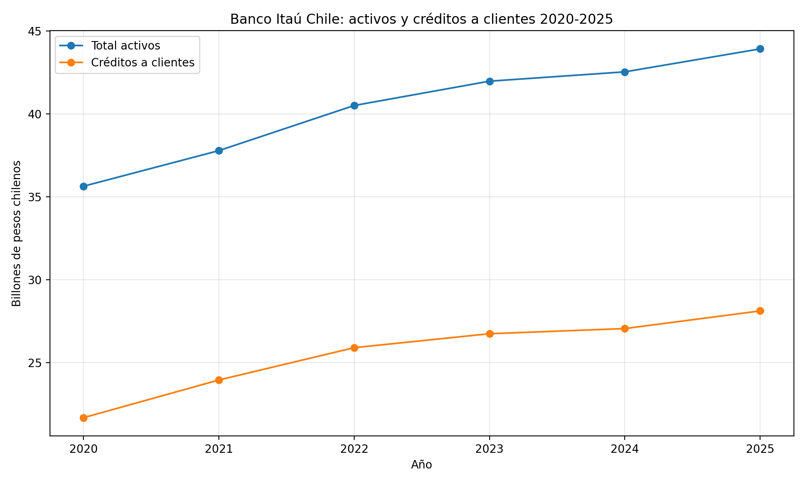
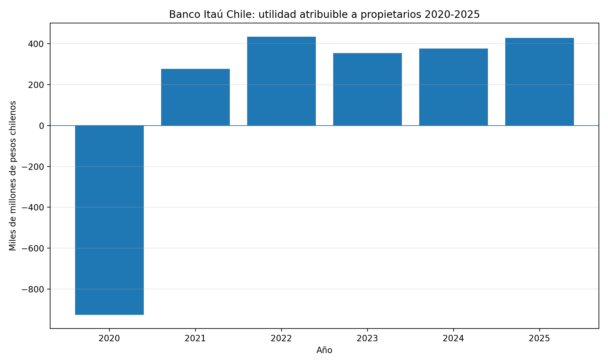
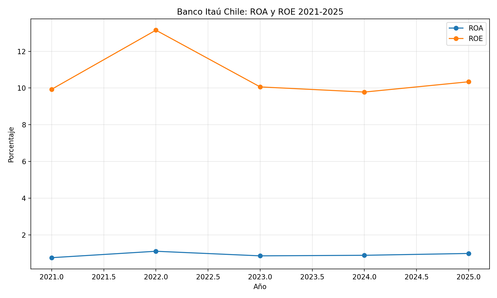
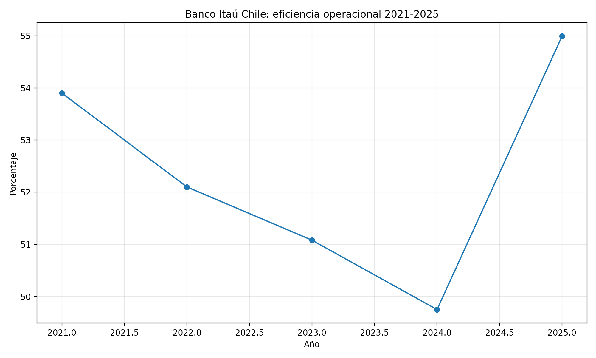

Portafolio financiero
Banco Itaú Chile: análisis financiero 2020-2025
Estudio elaborado con información pública de estados financieros, indicadores históricos y visualizaciones para evaluar la evolución financiera de Banco Itaú Chile.
MM$ 428.092
10,34%
54,99%
Resumen ejecutivo
Entre 2020 y 2025, Banco Itaú Chile presenta una recuperación relevante respecto de la pérdida observada en 2020, consolidando resultados positivos desde 2021. Durante el periodo se observa un crecimiento sostenido en activos y cartera de créditos, así como una mejora en la base patrimonial.
A pesar de ello, el análisis evidencia señales mixtas en 2025: la utilidad atribuible aumenta y el ROE se mantiene en niveles positivos, pero la eficiencia operacional muestra deterioro frente a 2024, lo que sugiere presión sobre la estructura de costos y el resultado operacional.
Objetivo del estudio
Evaluar la evolución financiera de Banco Itaú Chile mediante revisión histórica de balance, resultados, rentabilidad e indicadores clave.
Fuentes utilizadas
Estados financieros públicos publicados por la CMF, series históricas consolidadas y precios bursátiles de Yahoo Finance.
Alcance
Análisis de activos, créditos, patrimonio, utilidad, ROA, ROE, eficiencia operacional y visualizaciones comparativas.
Datos financieros principales
| Concepto | 2025 MM$ | 2024 MM$ | Variación |
|---|---|---|---|
| Total activos | 43.916.278 | 42.531.714 | 3,3% |
| Créditos a clientes | 28.119.106 | 27.055.397 | 3,9% |
| Patrimonio atribuible | 4.305.006 | 3.971.313 | 8,4% |
| Utilidad atribuible | 428.092 | 376.627 | 13,7% |
| Ingreso neto por intereses | 1.116.737 | 1.062.319 | 5,1% |
| Gastos operacionales | 834.789 | 808.824 | 3,2% |
Hallazgos clave
- Recuperación significativa desde la pérdida registrada en 2020.
- Crecimiento acumulado en activos y cartera de créditos.
- Fortalecimiento patrimonial en el periodo analizado.
- Utilidad atribuible positiva y consistente desde 2021.
- Deterioro de la eficiencia operacional en 2025 respecto de 2024.
Indicadores 2025
- ROA: 0,99%
- ROE: 10,34%
- Eficiencia operacional: 54,99%
- Costo de riesgo: 1,14%
- Patrimonio / Activos: 9,81%
Visualización dinámica del análisis
El siguiente gráfico permite revisar de forma interactiva la evolución de los principales indicadores financieros de Banco Itaú Chile entre 2020 y 2025. El selector permite cambiar entre activos, créditos, utilidad, ROA, ROE, eficiencia operacional y patrimonio sobre activos.
Cifras financieras expresadas en MM$ y ratios en porcentaje. Elaboración propia a partir de la base financiera histórica construida para el estudio.
Gráficos complementarios




Conclusión
Banco Itaú Chile muestra una trayectoria de recuperación y crecimiento en el periodo 2020–2025, con resultados positivos, expansión de cartera y fortalecimiento patrimonial. No obstante, el deterioro de la eficiencia operacional en 2025 sugiere la necesidad de monitorear la evolución de los gastos y su efecto sobre la rentabilidad futura.